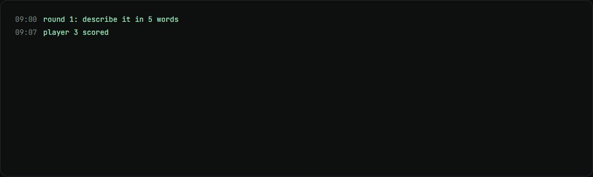
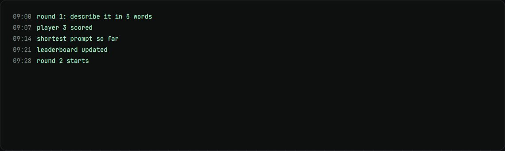

Prompt Golf
A live workshop game: write the shortest prompt that gets the target output, scored by Claude.
my role Built it solo: 8 commits in 2 days.
The problem
Prompting workshops stick better when people compete instead of watching slides.
How it works
- Players get a target output and write the shortest prompt they can.
- Claude Haiku runs the prompt, then a judge scores it against a hidden rubric.
- Accuracy plus a brevity bonus goes onto a live leaderboard.
- It runs from one laptop through a Cloudflare tunnel.
What changed
- 5challenge rounds
- +10brevity bonus on top of accuracy
What I built
- The zero-dependency Node server and the game.
- The judge and the scoring.
- Five challenge rounds.
Stack
- Node.js
- Claude API
- Cloudflare Tunnel
Stills

